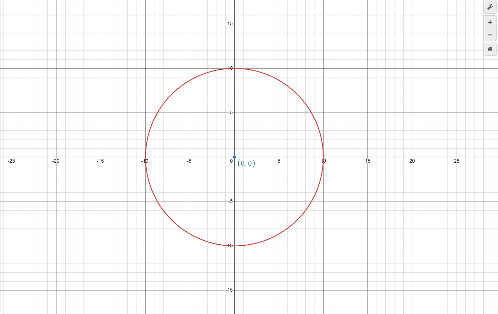
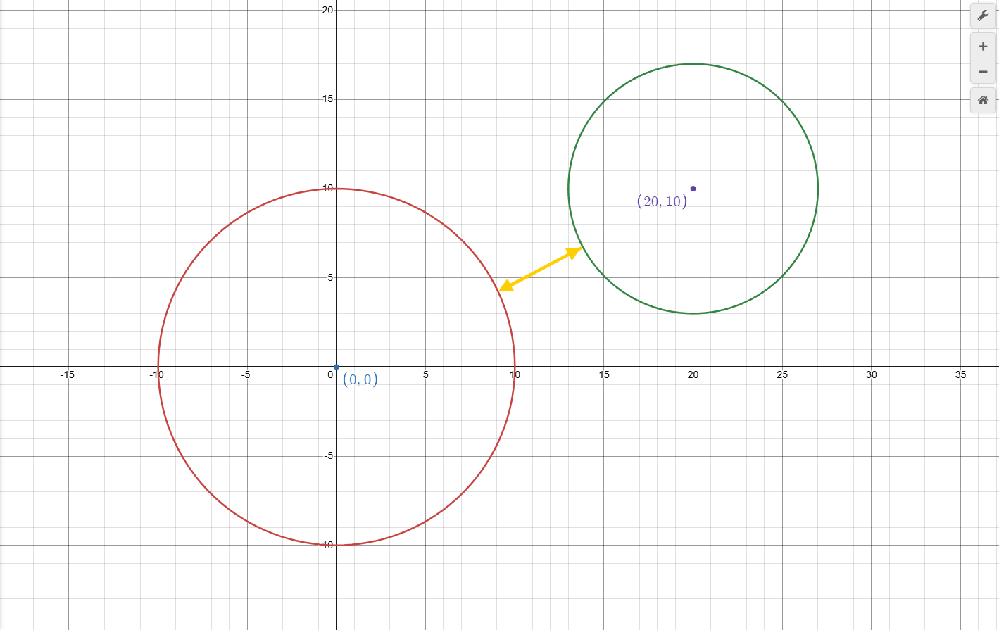

Exercise 3: Circle with Coordinates
This exercise will help you understand composition in object-oriented programming by modeling geometric objects in a 2D Cartesian plane. Specifically, we will be focusing on the Circle class from exercise 01.
You will also explore how Python handles primitive and reference types and some things to take note of.
Brief
Previously, you learned how to model a simple shape like a Circle using classes. Now, you will extend this circle and place it in 2D Cartesian (x-y) plane. This means each circle must also keep track of coordinates in the x-y plane.
 Above is an image of a circle with the circle point (0,0) and a radius of 10.
Task 0: Accept the Assignment
Accept the assignment using the provided GitHub Classroom link.
Task 1: Primitive vs Reference Types
Open the file task1.py and write a short code example that demonstrates how Python handles:
- Primitive types (e.g.,
int,float) - Reference types (e.g.,
list,dict, or your own class)
Implement functions that show how assignment and modification affect the original variables for both primitive and reference types.
Task 2: Point Class
Rather than keeping track of x,y coordinate individually with our shapes using attribute for each shape, we will create a dedicated Point class that encapsulate the coordinate and the related logic for us.
Design
Start by creating a Point class with these specifications:
Attributes:
x(float): The x-coordinate.y(float): The y-coordinate.
Methods:
distance_to(other): Returns the Euclidean distance between this point and anotherPointobject. Raise a ValueError if the object is not anotherPointobject (hint: use theisinstance(...)function)__str__: Returns a string representation in the format(x, y).
__eq__ method
Study
Before you continue to task 3, let us explore the following code:
1 2 3 4 | |
Even though both p1 and p2 at at (0,0), the output of this code will be false!
By default if you do not implement the __eq__ method in python, python will compare whether the object are the same if they have same reference (location in memory). Since, p1 and p2 has different reference (as they are 2 separate object located in different area of the computer memory) it return false.
On the other hand, something like
1 2 3 4 | |
will return true.
Your task
Research on the __eq__ method and implement it such that we can compare different Point objects using the == operator.
Task 3: Design the Circle Class Using Composition
Redesign your Circle class from Exercise 1 to utilize composition by including a Point object as its center. Implement another a method such we are able to find the distance between 2 circle. Raise a ValueError if the object is not a circle

Note: If the circle is overlapping you should return zero.